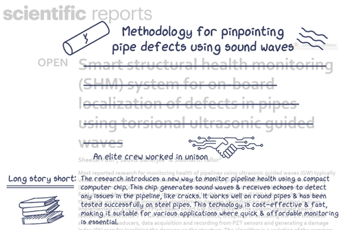
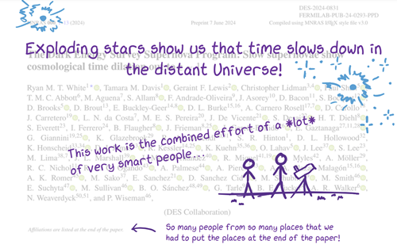
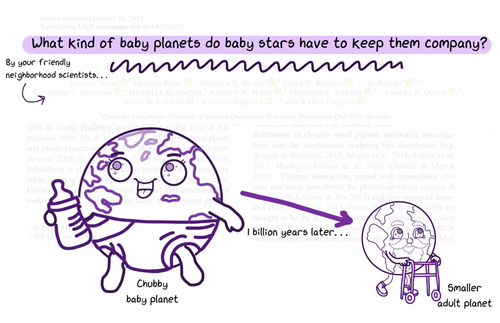
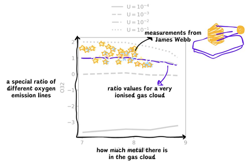
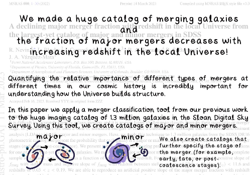
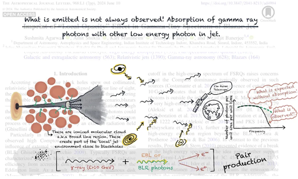
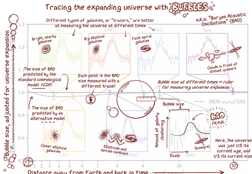
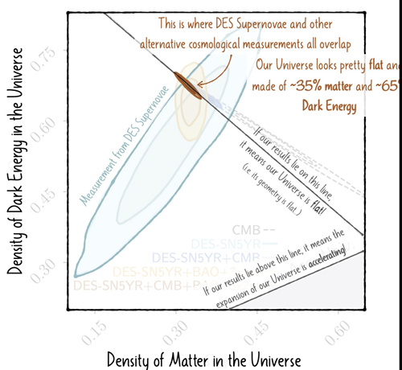

Collection of Paper Doodles
This is a living page where I link other's paper summaries. Contact me if you have made one and would like to be featured! I am also developing rescources (i.e. a PowerPoint template) for summarizing papers. Though some artistic skill is helpful for those wanting to include doodles, all that is really needed is some reflection about what the most important ideas in a paper are. Click here for my paper summaries.
Methodology for pinpointing pip defects using sound waves (Rutuja Chalk)
A full-paper summary of a cool idea: using sound waves to find issues with pipes! Featuring some excellent cartoon diagrams.Link to accessible paper summary

Exploding stars show us that time slows down in the distant Universe! (Ryan White)
A full-paper summary of an exciting result from the Dark Energy Survey. They used supernoave and the expansion of the universe to explore time dilation! This page also includes a video with an interesting discussion with the authors.Link to accessible paper summary

What kind of baby planets do baby stars have to keep them company? (Sydney Vach)
A full-paper summary about exploring planet evolution with the TESS sattelite. This is a great introduction to the field of exoplanets, and features a cute baby planet (and even cuter old planet).Link to accessible paper summary

Adding important squiggly lines to galaxy models! (Sophie Newman)
Sophie explains her work on improving models of galaxy light for understanding JWST observations in this annotation, accompianied by a doodle-filled thread on galaxy spectra and their main results.Link to accessible paper summary

Galaxy mergers and machine learning (Becky Nevin)
Becky has created several cartoon summaries of her work, including exploring how galaxy interactions changes across cosmic time: Link to accessible paper summaryAnd using machine learning to:
connect data from different surveys
remove noise in astronomical images

What is emitted is not always observed! (Sushmita Agarwal)
A cartoon summary of how the orientations of black hole jets affect observations!Link to accessible paper summary

Tracing the Expanding universe with BUBBLES (Claire Lamman)
A summary I made of the key plot for DESI's measurements of the expanding universe with Baryon Acoustic Oscillations.Link to accessible paper summary

Supernovae results from DES (Maria Vincenzi)
An excellent twitter thread breaking down major results from the Dark Energy Survey Supernova Program, containing many cartoon-annotated plots.Link to accessible paper summary